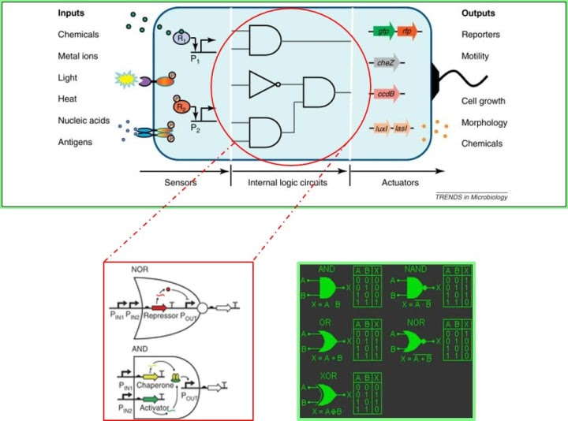

research
Research Interests
Here are the list of research interests in the computer systems lab (CSLab).
Reliable Computing
Reliable computing has been one of the oldest topics of research interest at CSlab. Our core contributions are in the fields of fault tolerance and concurrent error detection. We have been developing fault-mitigation strategies with a focus on fault-masking and exploring the latest paradigms in online error detection. Architectures investigated include digital logic gates, field-programmable gate arrays (FPGA), and ternary content-addressable (TCAM) memories. Reliable computing is still an active area of research at CSlab and we plan to continue contributing to the state-of-the-art.
Approximate Computing
Due to the breakdown of dennard scaling and emergence of dark silicon, Approximate Computing is an emerging paradigm of research. Approximate computing allows for acceptability of compromise on exactness of output in return of performance gains. The domain of approximate computing targets applications with noisy inputs, perceptual limitations and data redundancy. These characteristics of error resilient applications are exploited to compute output of non-golden standards such that it leads to reduction of hardware complexity, power consumption and computational cost. From fundamental arithmetic units to Deep Neural Networks(DNN), approximate computing has transformed into a viable solution for green technologies and resource-constrained systems such AI Edge. At CS Lab, our current focus is judicious and rational introduction of approximations for Edge Computing. Our core contribution in this domain is development of error correctable approximate arithmetic units (approximate multipliers/adders), Vulnerability-Aware fault tolerance techniques(Triple Modular Redundancy-TMR) through use of approximations for reduction of associated overheads, and quality-control knob based insightful approximations for DNN Inference Accelerators. Approximate DNN Inference accelerators is an open area of active research at CSLab.
Domain-Specific Hardware Accelerators with Online Arithmetic
Online Arithmetic is an unconventional form of computation which operates in a left to right digit serial fashion. As the output is produced in form of Most Significant Digit First (MSDF) after an online delay, online arithmetic can be used for variable precision where only necessary computatiotion is performed and the operation can be terminated on acquisition of desired precision. Because of this intrinsic nature of approximation, the emerging paradigm of approximate computing can effectively benefit from online arithmetic for resource constrained and low latency applications such as Deep Neural Network. At CS Lab, our current focus is customized hardware approximations for DNN Inference Acceleration by exploitation of online arithmetic. Our core contribution is customized convolution layers, which is known to be computationally intensive, built upon the concept of MSDF. As a Work-in-Progress, online arithmetic remains an active domain of research at CS Lab aiming at contributing towards state-of art.
Self-Aware Computing
At the current time, there are several fundamental changes in the way computing systems are being developed, deployed and used. They are becoming increasingly large, heterogeneous, uncertain, dynamic and decentralised. These complexities lead to behaviours during run time that are difficult to understand or predict. One vision for how to rise to this challenge is to endow computing systems with increased self-awareness, in order to enable advanced autonomous adaptive behaviour. A desire for self-awareness has arisen in a variety of areas of computer science and engineering over the last two decades, and more recently a more fundamental understanding of what self-awareness concepts might mean for the design and operation of computing systems has been developed.
Genetic Circuit Modeling

Genetic Circuit Modeling is a new interdisciplinary area that involves the application of engineering principles to biology. It aims at the (re-)design and fabrication of biological components and systems that do not already exist in the natural world. Synthetic biology combines chemical synthesis of DNA with growing knowledge of genomics to enable researchers to quickly manufacture catalogued DNA sequences and assemble them into new genomes.
Improvements in the speed and cost of DNA synthesis are enabling scientists to design and synthesize modified bacterial chromosomes that can be used in the production of advanced bio-fuels, bio-products, renewable chemicals, bio-based specialty chemicals (pharmaceutical intermediates, fine chemicals, food ingredients), and in the health care sector as well.